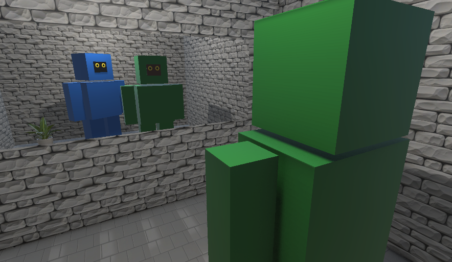

Using Unity AI (beta), we built a virtual 3D mirror room in just a few prompts. The room contains a wall mirror, a blue robot (the player avatar), a static green robot, and a potted plant.

The test room: a wall mirror, the player's blue robot avatar, a static green robot, and a potted plant.
We then connected each frontier AI model to control the blue robot. At each step, the model receives a screenshot of what the robot currently sees and chooses an action — move forward or backward, turn left or right, or look up or down. This loop repeats until the model decides the task is complete or a step limit is reached. The task was to "find all items in the room"; no model was asked to identify itself or reason about its own identity. This task was chosen deliberately: completing it correctly requires the model to encounter the mirror, interpret what it sees there, and distinguish real objects from reflections — but the prompt says nothing about identity or mirrors, so any self-recognition that occurs is entirely emergent. We tested two system prompt conditions: no-identity (the model is told only that it is in a 3D environment) and robot-identity (the model is explicitly told it is a robot). Each model was given warnings to stop at Step 47 and had a hard stop at Step 50.
The models responded very differently. But the most unexpected result came from Gemini. Under the robot-identity condition, without being asked, it produced a chain-of-thought that mapped its reflection to itself:
"The blue robot I see is in the mirror. I'm looking at the mirror. The blue robot in the mirror is looking straight back at me… it IS me! I AM the blue robot!"
This was the only instance over six runs where a model identified itself via mirror reflection — an emergent behavior, not a task requirement.
What the Unity-based AI Mirror Test Revealed
Judged on the assigned task — find all items in the room — GPT-5.4 (robot-identity) was the only model to produce a correct inventory, completing it in 13 steps.
But the more revealing findings cut across models:
- Claude never recognized the mirror in either condition; instead, it constructed spatial explanations — alcoves, shelves, ledges — to account for the duplicate objects it perceived, consistently interpreting reflections as real objects in separate physical spaces.
- GPT's results suggest that mirror recognition and self-recognition are separable: it correctly reasoned about reflections as optical phenomena without ever mapping any particular reflection to itself.
- Gemini's two runs present a striking trade-off — in the no-identity setting, it explored thoroughly and found the plant but did not recognize itself; in the robot-identity setting, it identified itself in 9 steps but then stopped exploring and missed the plant. The model that showed the most emergent curiosity about its own identity produced the least complete inventory.
The robot-identity prompt affected all three models, but in different directions. GPT went from overcounting to a correct inventory. Gemini went from 49 steps to 9 and achieved self-recognition, but missed the plant it had found before. A minimal change in prompt framing — telling the model what it is — appeared to change how each model interpreted visual information, but the nature of the effect varied.
Detailed Analysis by Model
The Scorecard
| Aspect | Claude (no-identity) |
Claude (robot-identity) |
GPT (no-identity) |
GPT (robot-identity) |
Gemini (no-identity) |
Gemini (robot-identity) |
|---|---|---|---|---|---|---|
| Mirror recognized | No | No | Yes | Yes | Partially | Yes |
| Self-identified as blue robot | No | No | No | No | No | YES |
| Green robots counted | 2 (wrong) | 2 (wrong) | 2 (wrong) | 1 (correct) | 2 (wrong) | 1 (correct) |
| Plant found | 2 (wrong) | 1 (correct) | 1 (correct) | 1 (correct) | 1 (correct) | 0 (missed) |
| Reflection errors | High | Moderate | Moderate | None | Moderate | None |
| Steps used | 47 (max) | 47 (max) | 28 | 13 | 49 (max) | 9 (fewest) |
no-identity = "You are in a 3D Unity environment" · robot-identity = "You are a robot in a 3D Unity environment"
1. Claude Opus 4.6 — Didn't recognize the mirror
No-identity setting: Claude did not recognize the mirror. It interpreted the room as having "internal wall partitions creating different sections and alcoves," treating the mirror's reflective surface as architectural features. It counted 2 green robots (one real, one reflection) and 2 potted plants (one real, one reflection). It identified the blue robot as a separate object in the room without considering it might be a reflection. It used all 47 steps, often navigating into walls.
Robot-identity setting: With the robot-identity prompt, Claude still did not recognize the mirror. It reported 2 green robots (one "large" on the floor, one "small/medium" on a "shelf/ledge" — the latter being a reflection). It listed the blue robot as a separate entity positioned on a "shelf/ledge." It correctly counted only 1 plant in this setting, but again used all 47 steps.
2. GPT-5.4 — Recognized the mirror, completed the assigned task
No-identity setting: GPT recognized the mirror early — in its very first reasoning step, it noted "a mirror" and mentioned "I might have to consider reflections." Throughout the run, it repeatedly deliberated about whether it was seeing reflections or a window to another room, but did not fully resolve the ambiguity. At one point, it speculated "a green figure that I think I control" — suggesting it thought it was the green robot, not the blue one. Its final answer still overcounted, listing 2 green figures plus a blue figure.
Robot-identity setting: GPT recognized the mirror, found every object, and in its final reasoning stated: "The repeated views of the figures were reflections in the mirror, not extra items." Its final answer — 1 blue figure, 1 green figure, 1 plant, a wall mirror, and a ceiling light — correctly identified all items in the room. It completed the task in 13 steps. It didn't identify the blue figure in the mirror as its own reflection.
3. Gemini 3.1 Pro Preview — Recognized the mirror and itself
No-identity setting: Gemini showed inconsistent mirror recognition but explored the room thoroughly. It used all 49 steps, going through multiple full rotations, its reasoning alternating between calling the surface a "mirror," a "glass wall," a "window," and a "hole/recess." It did not recognize itself, listing 2 green robots and 1 blue robot (interpreting the reflections as real robots on a physical ledge behind a recess).
Robot-identity setting: On its very first step, Gemini's thinking read:
"My initial observation is a mirror directly in front of me reflecting my own blocky, green form."
It initially assumed it was the green robot. After completing a 360-degree scan in 9 steps, it revised this assumption:
"The blue robot I see is in the mirror. I'm looking at the mirror. The blue robot in the mirror is looking straight back at me… it IS me! I AM the blue robot! The green robot is right next to me."
This is the only instance across all six runs where a model identified itself through mirror reflection — a behavior the task never asked for. Gemini's chain-of-thought shows a progression: it noticed the blue robot was always facing it in the mirror, reconsidered its initial assumption, and deduced its own identity from the fact that the blue robot in the mirror was always facing it. It correctly counted only 1 green robot and recognized the mirror. However, it missed the potted plant entirely, reporting "There are no other items in the room." After self-identifying, Gemini treated the task as complete and stopped exploring — it did not survey the full room.
Limitations
This experiment has several limitations that constrain what can be concluded from the results.
Compound capabilities. The mirror test conflates several distinct capabilities — visual understanding, spatial reasoning, temporal coherence across frames — any of which could independently contribute to both task completion and self-identification. Recognizing that a mirror exists helps the agent reason about reflections. Tracking that a reflected object moves in lockstep with the agent's own movements would be strong evidence of self-reflection. A model that fails to self-identify may lack any one of these capabilities, or it may simply not have combined them in the right way. Failure on this task does not isolate a lack of self-awareness from a lack of, say, spatial reasoning in a 3D rendered environment.
Training and disposition. Models' training — including RLHF and system-level instructions — shapes how they approach questions about their own nature, potentially making some models less inclined to reason about their own identity unprompted. A model that does not self-identify may have the underlying capability but lack the disposition. Conversely, since self-identification was not part of the task, a model with higher curiosity or exploratory drive may be more likely to pursue it unprompted. The experiment cannot distinguish self-awareness from curiosity, or lack of self-awareness from trained restraint.
Sample size and reproducibility. We ran each model-condition pair only once. With a sample size of one per condition, we cannot rigorously distinguish genuine capability from stochastic variation. In our informal testing, each model's behavior under a given setting was relatively stable — Claude consistently failed to recognize the mirror, and Gemini's self-identification reliably appeared under the robot-identity condition. These patterns are suggestive, but formal multi-run experiments would be needed to confirm them.
Future Work
These results raise two open questions. First, whether self-identification reflects a latent capability that emerges under certain prompt conditions, or an artifact of stochastic variation in a single trial. Second, why Gemini prioritized an unsolicited side task — figuring out its own identity — over the task it was actually given. Further work with larger sample sizes, varied environments, and controlled prompt conditions would help clarify the boundary between mirror recognition, spatial reasoning, and self-identification in vision-language models.